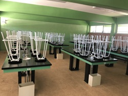

Talleres de Simulación de Contención Mecánica
Espacios didácticos en los laboratorios del bachillerato donde se exponen las técnicas de uso de barreras flotantes hidrofóbicas y absorbedores mecánicos aplicados para cercar manchas de crudo en el mar.